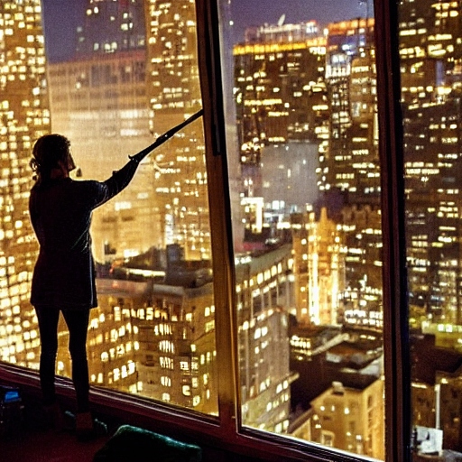
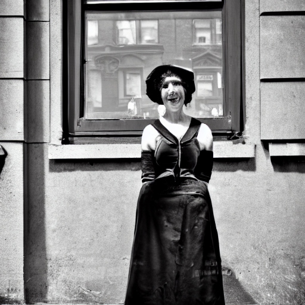

In the heart of New York City...
there was a brick apartment building that seemed to breathe with a life of its own. Its walls whispered secrets of countless lives lived within, and its narrow hallways echoed with the footsteps of diverse souls chasing dreams. On the sixth floor of this peculiar building, lived a girl named Luna.

Luna was not your average New Yorker. She was a kaleidoscope of eccentricity, an embodiment of contradictions, and her apartment mirrored her chaotic spirit. Neon signs adorned the walls, casting wild splashes of color across mismatched furniture. Luna's love for thrift store finds and vintage oddities turned her living space into a mad artist's playground.
One fateful evening, as Luna was engrossed in her latest painting, the city outside her window took on a surreal glow. The skyscrapers seemed to dance with the stars, and the honking of horns transformed into a bizarre symphony. Luna, feeling an inexplicable energy, decided to step into the eccentricity of her own making.
Yet, amidst the mayhem, Luna found solace in her eccentric existence. Her art became a conduit for the surreal energies that surrounded her, and she painted the extraordinary scenes of her whimsical adventures. Each stroke of her brush captured the essence of this parallel New York, where reality was but a distant memory.
In the heart of the city that never sleeps, Luna, the girl from the brick apartment building, embraced the madness and reveled in the extraordinary. Her life was a canvas, and she painted it with the vibrant hues of the unexpected, creating a masterpiece that defied the boundaries of the ordinary.